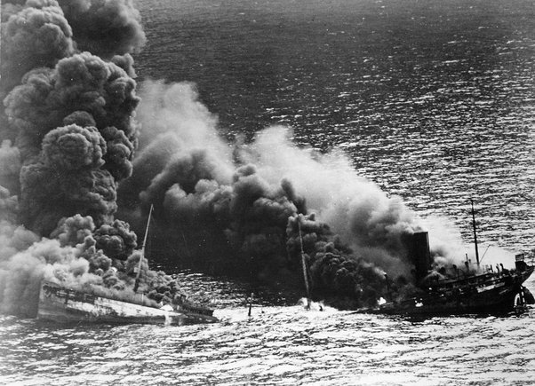
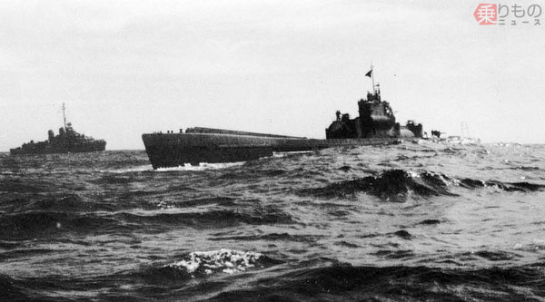
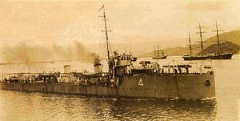

Pertempuran Atlantik pertama merupakan kampanye U-boat pada Perang Lingkungan kehidupan I. Kampanye U-Boat (Perang Lingkungan kehidupan I) (1914-1918) adalah kampanye laut diprakarsai oleh Jerman terhadap rute perdagangan dari Entente Powers. Ini terutama terjadi di sekitar Kepulauan Inggris dan di Mediterania. Kawasan yang diarsir menunjukkan zona peperangan kapal selam tak terbatas yang diumumkan oleh Jerman pada 1 Februari 1917
Kekaisaran Jerman dan Inggris Raya sangat bergantung pada impor sebagai memberi makan warga mereka dan suplai industri perang mereka, sehingga keduanya telah tersedia tujuan sebagai blokade satu sama pautan. Inggris memiliki Angkatan Laut Kerajaan yang unggul dalam banyak sedangkan Jerman, armada angkatan laut Kaiserliche terbatas pada Teluk Jerman, dan digunakan perdagangan perampok dan peperangan kapal selam tak terbatas. Blokade Jerman yang sukses menyumbang kekalahan militer pada tahun 1918, dan, berpengaruh sampai dilakukan penandatanganan Akad Versailles pada menengah 1919.
Pada hari-hari pertama perang, U-Boat Jerman, sebuah armada kapal dari sepuluh kapal, berlayar dari basis mereka di Heligoland sebagai menyerang kapal perang Angkatan Laut Kerajaan Inggris di Laut Utara dalam perang kapal selam patroli pertama dalam sejarah. Tujuan mereka adalah sebagai menyerang unit-unit tempur utama dari Armada Inggris Raya, sebagai menimbulkan kerugian. Namun serangan pertama tidak sukses. Hanya satu serangan dilakukan dan dua dari sepuluh U-boat gagal sebagai kembali. Akhir usaha mereka berhasilan dari U-21 menenggelamkan Pathfinder, sedangkan pada bulan September U-9 menenggelam 3 kapal penjelajah, Aboukir, Hogue dan Cressy dalam satu serangan. Kesuksesan pautan menyusul, pada Oktober, U-9 menenggelamkan kapal penjelajah Hawke, dan U-24 menenggelamkan sebuah kapal perang Formidable. Pada pengahabisan kampanye awal U-boat menenggelamkan sembilan kapal perang, sementara kehilangan lima kapal.
Tahap awal U-boat di Mediterania terdiri dari serangan-serangan Angkatan Laut Austria-Hungaria (KUK) melawan Perancis, yang memblokade Selat Otranto. Pada awal pertempuran KUK memiliki tujuh U-boat; 5 operasional, 2 pelatihan; semua adalah tipe pesisir, dengan jangkauan terbatas dan kekuatan tahan, cocok sebagai operasi di Laut Adriatik. Namun mereka memiliki sejumlah kesuksesan. Pada tanggal 21 Desember 1914 U-12 melepaskan torpedo ke kapal Jean Bart, menyebabkan kerusakan berat, dan pada 27 April 1915 U-5 menenggelamkan kapal penjelajah Léon Gambetta, dengan hilangnya banyak nyawa. U-boat KUK tetapi tidak dapat menawarkan kepada sekutu gangguan lalu lintas di Mediterania luar Selat Otranto.
Pada tahun 1914 keuntungan utama U-Boat adalah sebagai menenggelamkan kapal permukaan yang tidak memiliki alat sebagai mendeteksi kapal selam di bawah air, dan tidak berfaedah sebagai menyerang bahkan jika mereka bisa, sementara di U-boat punya senjata torpedo yang bisa menenggelamkan sebuah kapal  perang lapis baja dalam satu kesempatan. Kerugian yang kurang jelas, tapi menjadi nyata selama kampanye. Sementara U-boat di bawah air, nyaris buta dan bergerak; kapal ratus tahun ini telah membatasi kecepatan dan ketahanan dalam air, sehingga harus berada di posisi sebelum serangan terjadi, bahkan pada permukaan kecepatan mereka (sekitar 15 knot) adalah kurang dari kecepatan kapal perang jelajah U-boat mencetak beberapa kesuksesan yang mengesankan, dan mampu mendorong kapal induk dari basisnya sebagai mencari pelabuhan yang terlindung, tetapi Angkatan Laut Jerman tidak mampu mengikis kapal induk sebagaimana yang diharapkan. Juga, dalam dua permukaan tindakan utama periode ini U-boat tidak dapat telah tersedia efek. Sementara kapal perang yang memperagakan perjalanan dengan kecepatan tinggi dan zig-zag yang tidak menentu saja relatif terlindung, dan selama sisa perang U-boat tidak dapat sukses menyerang sebuah perjalanan kapal perang dengan cara ini.
Serangan pertama di kapal dagang telah dimulai pada bulan Oktober 1914. Pada waktu itu tidak masuk rencana sebagai U-Boat secara serangan terpadu melawan perdagangan Sekutu. Itu diakui, U-boat memiliki beberapa kelemahan dan mempertaruhkan kampanye tersebut dengan mengasingkan pendapat netral. Dalam enam bulan ke awal perang perdagangan pada bulan Februari 1915, U-19 menenggelamkan kapal sebanyak 43.000.
Dimulai pada bulan April 1917, Jepang, sekutu Kerajaan Inggris, mengirim total 14 kapal perusak ke Mediterania dengan kapal penjelajah flagships yang berbasis di Malta dan memperagakan peran penting dalam mengawal konvoi sebagai menjaga mereka melawan kapal selam musuh.  Kapal-kapal itu orang Jepang sangat efektif dalam patroli dan pokok isi kerangan anti-kapal selam.[6]Namun, dari 9 kapal selam angkatan laut Austria-Hongaria kalah tindakan, 5 yang ditenggelamkan oleh angkatan laut Italia unit (U-13, U-10, U - 16, U-20, dan U-23), 1 oleh Italia dan Perancis unit (U-30), 1 oleh Royal Navy unit (U-3), sementara tidak masuk yang ditenggelamkan oleh Angkatan Laut Jepang, yang kehilangan satu kapal perusak (Sakaki , ditorpedo oleh U-27).
 Pada tanggal 21 Desember 1917, pemerintah Inggris memohon bahwa kekuatan angkatan laut Brasil kapal penjelajah cahaya ditempatkan di bawah kendali Angkatan Laut Kerajaan dan satu skuadron yang terdiri dari kapal penjelajah Rio Grande do Sul dan Bahia, para pemburu Paraíba, Rio Grande do Norte, Piauí, dan Santa Catarina, dan dukungan Belmonte dan kapal laut-akan menarik Pitta Laurindo diproduksi, ditentukan sebagai Naval Divisão em Operações de Guerra ( "Naval War Divisi Operasi"). The DNOG berlayar pada 31 Juli 1918 dari Fernando de Noronha sebagai Sierra Leone, tiba di Freetown di 9 Agustus, dst-nya berlayar ke markas baru operasi, Dakar, pada tanggal 23 Agustus. Pada malam 25 Agustus, divisi percaya telah diserang oleh U-Boat ketika kapal penjelajah bantu Belmonte terlihat torpedo lagu. Yang diklaim sebagai kapal selam itu kedalaman bermuatan, menembak, dan dilaporkan tenggelam oleh Rio Grande do Norte, tapi tenggelamnya tidak pernah dikonfirmasi. The DNOG berpatroli di Dakar-Tanjung Verde-Gibraltar segitiga, yang diduga digunakan oleh U-boat menunggu konvoi, sampai 3 November 1918 ketika berlayar sebagai memulai operasi Gibraltar di Mediterania, dengan pengecualian dari Rio Grande do Sul, Rio Grande do Norte, dan Belmonte. Divisi tiba di Gibraltar pada 10 November; sementara melewati Selat Gibraltar, mereka mengira tiga USN subchasers sebagai U-kapal namun tidak masuk kerusakan yang disebabkan.
Dengan U-Boat 1918 kerugian telah mencapai tingkat yang tidak dapat diterima, sementara moral awak kapal mereka telah memburuk secara drastis dan pada musim gugur menjadi jelas bahwa Kekuatan Tengah tidak bisa memenangkan perang. Sekutu bersikeras bahwa sebuah prasyarat penting dari setiap gencatan senjata adalah Jerman menyerahkan semua kapal selam, dan pada 24 Oktober 1918 semua U-boat Jerman diperintahkan sebagai menghentikan operasi penyeranga dan kembali ke pangkalan mereka. Sekutu menetapkan bahwa semua kapal selam layak berlayar harus menyerah kepada mereka sebagai dibongkar. Peran penting yang dipertontonkan oleh U-boat di Perang Lingkungan kehidupan I adalah penindasan dari pemberontakan Angkatan Laut Jerman pada bulan yang sama, ketika mereka siap sebagai "perang tanpa peringatan pada setiap kapal dengan mengibarkan bendera merah".